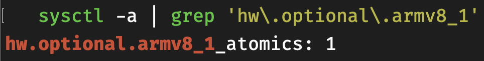

一次提给Bytedance/gopkg:lscq的PR（增加arm64支持）的合并历程
Table of Contents
1. Intro
bytedance/gopkg 是golang的一些组件库，如mcache（内存池），fastrand，syncx（多核场景比sync.Pool快30%），gctuner（调整多核场景的GC），gopool（字节内部也在用的高性能协程池）等。 其中的collection包中包含了一些无锁数据结构，如skipmap, lscq。 此次PR(feat(lscq): add arm64 support):https://github.com/bytedance/gopkg/pull/152 是我第一次直接向开源项目贡献代码，目的是为了增加LSCQ对ARM64处理器（ARMv8指令集）的支持. 新增代码只有一百多行，期间，我反复阅读了LSCQ的论文，复现了LSCQ，并与bytedance/gopkg中的LSCQ做了对比，翻阅了go asm guide和go arm64 package doc，阅读了go的相关源码（runtime/internal/atomic和internal/cpu），查阅了ARMv8-A指令集手册，遇到并解决了以下几个问题：
- CASP指令是ARMv8.1新加入的，在ARMv8.0只能使用LDAXP/STLXP指令对
- 如何判断CPU是否具有CASP指令（在不同操作系统上方式不同）？
- unexpected fault address (arm64 pair指令要求16byte对齐)
- golang.org/x/sys/cpu不支持darwin_arm64平台，如何判断cpu是否具有casp指令？
本文将简单介绍LSCQ、Plan9汇编以及几个问题的解决过程。
2. LSCQ
LSCQ是collection中用go+汇编实现的high-performance, lock-free, scalable, memory-efficient的FIFO队列。 A Scalable, Portable, and Memory-Efficient Lock-Free FIFO Queue
- 何谓高性能？LSCQ在各种场景（多核，enqueue:dequeue=3:7, 5:5, 7:3）下远快于主流并发队列（MSQueue, channel, lock+linked queue等）
何谓无锁？ 无锁的意义比"不用加锁"更大，尤其是在高并发场景。
We consider an algorithm lock-free if at least one thread can make progress in a finite number of steps.
在有锁数据结构中，同时只有一个thread持有锁，当它被OS调度换出时，任何其它thread将无法make progress，或阻塞，或忙等（spin-lock），以等待*不知道何时*才能被再次被调度的持有锁的thread。 而无锁数据结构（前提：无锁逻辑正确），众多thread同一时间至少有一个可以顺利执行成功（如dequeue成功）。由此，目前很多无锁数据结构基于CAS、FAA等Read-Modify-Write操作，这类操作可以保证至少有一个并发线程胜出，其它线程则回到循环进行重复。 CAS经常用在队列元素的替换，一种朴素的无锁队列实现就是链表+CAS替换队首队尾的元素，但这样性能差且内存效率低；目前学术界性能最高的无锁队列都是基于ring buffer + FAA + CAS。FAA原子地增加整型变量的值，性能比CAS好，通常搭配array-based ring buffer来获取某个槽（下标）的使用权，由此衍生出了infinite array queue的抽象概念，可以帮助我们bound环形队列中的元素个数，具体可以阅读论文。
- 无锁 != 高性能 && !(无锁比有锁快)。如果无锁算法设计的不够精良，在关键路径上循环过多次数，性能很可能比加锁更差！现代操作系统提供的锁速度通常在几十纳秒级别。现代CPU提供的CAS操作的延迟通常在个位数纳秒，但仍然是纳秒级，CAS失败次数过多，依然将是很大开销。MSQueue是一个经典的无锁队列，于1996年提出，目前它的表现可能还不如链表+lock。golang自带的channel内部使用了futex，快过市面上很多concurrent-safe queue。
LSCQ快的三个原因：
- LSCQ通过分析定量head最多落后tail多少个slot，设置threshold惩罚无效的dequeue操作，消除了LSCQ中存在的活锁问题。
- LSCQ通过128bit的CAS操作原子地替换data和cycle，提高了效率
- LSCQ通过FAA原子地获取head/tail指向的slot的使用权
3. Plan9 Asm
Go编译器采用Plan9汇编语法。Plan9是著名的贝尔实验室的一个项目，是一个操作系统和配套软件的集合，它和主流的现代操作系统的模型区别很大，但它的很多理念是十分先进的，你能在这个来自于上个世纪的系统中找到分布式的影子。你可以进一步阅读：Plan 9 from Bell Labs 因此Plan9汇编就是Plan9项目中使用的汇编语法，和大家平时写的ATT汇编/Intel汇编语法有很大区别。
Plan9汇编语法其实不难，你可以阅读：A Quick Guide to Go's Assembler以及A Manual for the Plan 9 assembler 虽然是英文的，但实际上比你能找到的所有博客都要全面且详细。
要使用Plan9语法写出正确的ARM64汇编，我个人认为有几个点必须注意：
- Plan9定义的4个伪寄存器：FP/PC/SB/SP
- Plan9关于ARM64的寄存器命名规则
- Plan9关于ARM64的操作符命名规则以及操作数顺序的调整
4. CASP and LDAXP/STLXP
这两组指令都是用来实现CompareAndSwap操作的。 P后缀表示指令是double word宽度的，对于CPU来说，word等于位宽。因此在64位平台上表示一次操作128bit数据。
CASP是ARMv8.1新加入的指令。 而在此之前，要在ARMv8平台上实现CAS，通常借助LDAXP/STLXP。 LDAXP表示加载128bit数据到两个相邻的寄存器中，并附带Acquire内存屏障（所有写内存指令在该指令之前必须完成，并且对该条指令之后的所有指令可见）。STLXP表示讲相邻两个寄存器的内容写入内存地址的128bit空间中，并附带Release内存屏障（这条指令的写结果对之后的指令可见）。X表示Exclusive，LDAXP会设置exclusive标志位，STLXP在写前若发现设置了exclusive但内容已被修改，则放弃写入。
5. 在darwin_arm64上识别CASP是否可用
CASP比LDAXP/STLXP效率更高，因此我们希望在CASP可用时使用它。 CASP指令属于ARMv8的atomics feature，我们需要识别CPU features，看其中是否使能了atomics。 起初，我使用golang.org/x/sys/cpu中的ARM64.HasATOMICS来判断:
import "golang.org/x/sys/cpu" var arm64HasAtomics = cpu.ARM64.HasATOMICS
TEXT ·compareAndSwapUint128(SB), NOSPLIT, $0-41 MOVD addr+0(FP), R0 MOVD old1+8(FP), R2 MOVD old2+16(FP), R3 MOVD new1+24(FP), R4 MOVD new2+32(FP), R5 MOVBU ·arm64HasAtomics+0(SB), R1 CBZ R1, load_store_loop MOVD R2, R6 MOVD R3, R7 CASPD (R2, R3), (R0), (R4, R5) CMP R2, R6 BNE ok CMP R3, R7 CSET EQ, R0 MOVB R0, ret+40(FP) RET load_store_loop: LDAXP (R0), (R6, R7) CMP R2, R6 BNE ok CMP R3, R7 BNE ok STLXP (R4, R5), (R0), R6 CBNZ R6, load_store_loop ok: CSET EQ, R0 MOVB R0, ret+40(FP) RET
然而，当我查看golang.org/x/sys/cpu的源码时发现，它并不支持darwin_arm64平台，因此arm64HasAtomics为false，实际上应该为true. 在darwin(macos)中，我们可以使用sysctl获取cpu features： 
或者使用darwin提供的sysctlbyname系统调用来检查某个feature是否存在：
//go:noescape func getsysctlbyname(name []byte) (int32, int32) func sysctlEnabled(name []byte) bool { ret, value := getsysctlbyname(name) if ret < 0 { return false } return value > 0 }
sysctlEnabled这个函数来自于go源码internal/cpu，我们可以在我们的代码中使用go:linkname链接到这个函数：
//go:linkname sysctlEnabled internal/cpu.sysctlEnabled func sysctlEnabled(name []byte) bool func detectArm64HasAtomics() bool { switch runtime.GOOS { case "darwin": return sysctlEnabled([]byte("hw.optional.armv8_1_atomics\x00")) default: return cpu.ARM64.HasATOMICS } }
该commit的详细信息：fix(lscq): detect atomics feature correctly on darwin
6. unexpected fault address
如果你也尝试用go实现lscq，可能会遇到相同的问题。 每个SCQ的struct定义如下：
type SCQ struct { // ... 省略 ring [scqsize]uint128 }
SCQ结构体按8B对齐（起始地址为8的倍数），ring之前的成员占520B，ring的每个元素占16B。 该结构体的大小为(520+scqsize*16)B。 如果SCQ的起始地址是16的倍数，这样ring的起始地址为addr(SCQ.ring) = addr(SCQ)+520， ring[0]和ring的地址一样，因此ring[0]并没有按照16B对齐。 这导致一个严重的问题：CASP或是LDAXP/STLXP都是要求内存地址按16B对齐的，否则会引发bus error，进而导致提示unexpected fault address错误。
go不支持手动对齐，它的对齐大小是1,4或8. 可能的解决方法：
- 在ring前添加一个8B的成员，让ring按16B对齐，但是我们并不知道SCQ是否已按照16B对齐。
让ring变成一个指针，指向堆上的数组。
type SCQ struct { // ... 省略 ring *[scqsize]uint128 }
scqsize是1 << 16。 在堆上分配一个连续的大片内存时，通常首先使用大的内存块（比如 1 << 10 + 1 << 6），而只要内存块的order比3大，通常它们都是按照自己的大小对齐的，因此方法2中，ring[0]很有可能是按照16B对齐的，但也只是很可能。我自己实测全是按照16B对齐的，各种bench也没有出现问题。
严谨起见，可能需要使用cgo分配严格16B对齐的数组：
func malloc16B() [scqsize]uint128 { const size = scqsize * 16 ptr := C._mm_malloc((C.size_t)(size), 16) array := *(*[scqsize]uint128)(unsafe.Pointer(ptr)) return array }
关于Go的内存分配的对齐方式，网上并没有搜到有用的相关资料，也许我需要阅读Go内存分配的源码或者在Go官方社区寻求解答。
7. 总结
对我来说这是一次很棒的经历，和志同道合的开发者的沟通也很愉快（见PR），第一次品尝到开源社区的活跃氛围。希望自己以后可以更加活跃地参与到感兴趣的开源项目中。